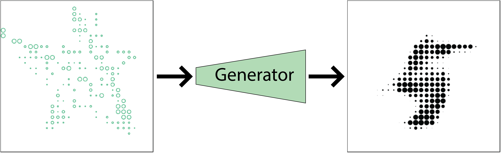

As a first experiment with ML, I've made a simple visualization of a DCGAN's ouptut, trained on the MNIST dataset of handwritten numbers.
I goals for this project where to:
The python script used to create and train the DCGAN can be here.
The UI for this webpage shows both the DCGAN's input and output values. The green circles represent each of the unique input features (most commonly "noise", but I wanted interaction), and the black circles are the DCGAN's predicted output.
This experiment was very useful for me, especially for getting a better intuition of latent space and interacting with generative models.